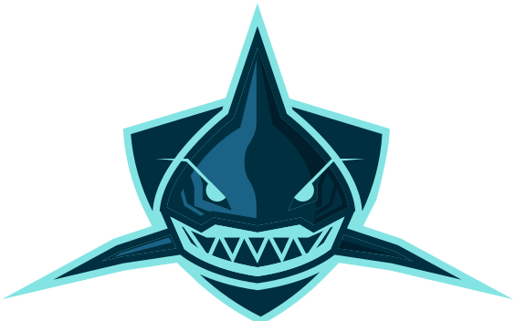
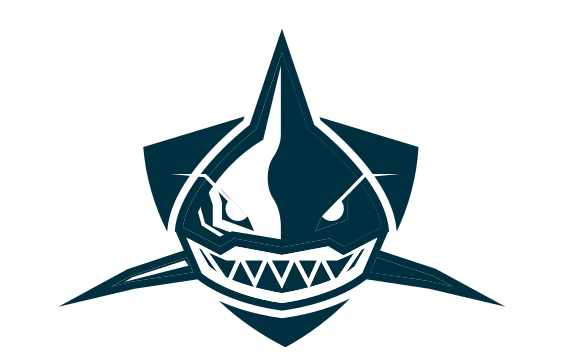
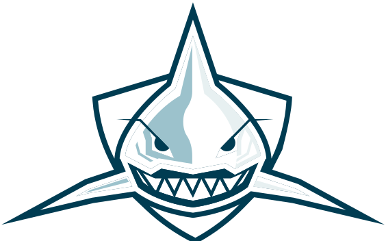

Every mark below is derived from your supplied vector art — same silhouette, same palette, same letterforms. What changes is construction, proportion and the system around it.

Eyes, teeth, jaw and gill separations are all filled #002F3F — the same value as the canvas. Placed on white, a jersey, or a photo, the face fills in and the shark loses its expression. These need to become true negative shapes.
Aqua linework, deep teal, a second shadow at #001E2B and a steel mid-tone at #1A6386. At favicon scale they average into one muddy shape.
Left and right pectoral groups sit at −38.16 and 40.88 with different sweep lengths. There is also a two-point sliver path near the right gill that renders as a stray artifact. A symmetric master with one reflected half fixes both.
The wordmark reads small and floats a long way below the mark. Fixing the gap and the width to the shark's own measurements is what turns two drawings into one logo.
Three relationships rather than three placements. B is the recommended header lockup.
Wordmark cap height set to the shark's jaw-to-crest height. Safe, conventional, wide.

A hairline divider does the spacing work, so the fins can overrun their box without crowding the J. Holds at 40px bar height.
The reduced fin silhouette in a solid tile. Best where the logo sits on photography or a busy product surface.
The silhouette is the asset that can eventually carry Juke without the wordmark. It survives embroidery, a 16px tab and a single-colour stamp, and the crest-and-fin shape is already unique to you.
All three are drawn from your existing letterforms, so JUKE stays recognisable. Each is a transformation you can hand to a type designer as a spec.
As supplied. Stencil-cut athletic sans, even tracking.
12° shear, tracking tightened to 9, 7-unit chamfer off every top-left corner. The cuts all face the direction of travel.
1.18× horizontal scale, tracking opened to 17, and a 2.6-unit gap detaching the K's arms from its stem. Reads as software, not merchandise.
0.74× scale, tracking 6. The utility cut — scoreboards, jersey chest strips, narrow app bars.
Three ways to put the shark inside the letter. The J already leans and hooks, which is why it takes this better than the other three characters.
A single swept triangle rising from the J's crossbar, angled to match the shark's dorsal. Loud, and the most likely to become a signature — it also gives you a standalone glyph.
The J's upper terminal is sheared at the same angle as the shark's tooth line. Quietest of the three and the only one that costs nothing in width — it reads as craft, not gimmick.
The profile cut into the J as negative space. The most sophisticated idea, and the most fragile — it needs the notch enlarged and the stem thickened to survive small sizes.
Shown at true pixel size. Each variant has a floor, and the system's job is to swap at the right one.
Marketing, hero, print, jersey crest.
App icon, site header, social avatar.
Favicon, badges, watermarks, embroidery.

Live draft rooms, real projections, no nonsense.
Lockup B puts the wordmark directly beside product type at small sizes, so the interface face has to stay out of its way. Two faces, three roles. The JUKE letterforms are a logo, never a heading font.
Chosen because it is wide where the wordmark is narrow — beside the mark it reads as a different voice rather than a worse version of the same one. It also holds up at 12px, which display sports faces do not.
Fantasy is a numbers product. Fixed-width digits stop draft clocks and stat columns twitching as they tick, and the tracked-out caps give you a label style that never competes with the wordmark.
Set the wordmark's own optical size next to Archivo — in lockup B the wordmark cap height should sit 1.15× the adjacent nav text so it holds rank without growing the bar.
Never typeset headlines in the JUKE letterforms. They have four glyphs' worth of resolved design; the rest of the alphabet would have to be invented, and the mark loses its scarcity.
Lockup B as the primary header, the two-value reduced shark as the everyday icon, and the silhouette as the small-size and single-colour asset. On the wordmark, the wide geometric cut with the split K puts the most distance between Juke and the mascot-heavy category — it is the one that reads as a product rather than a team.
For the J, the tooth cut is the safe signature and the dorsal fin is the memorable one. I would develop both and drop the negative snout.